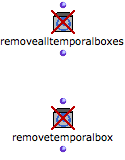
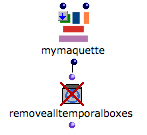
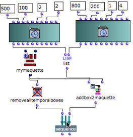
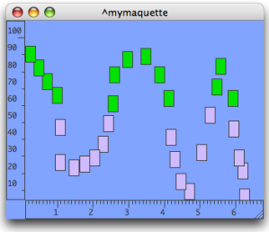

Removing TemporalBoxes from a Patch :
Removealltemporalboxes / Removetemporalboxes :
 | The removealltemporalboxes function allows to remove all TemporalBoxes of a maquette from a patch. The removetemporalbox function allows to delete one or several selected TemporalBoxes from a maquette.
|
Connect the maquette on "reference" mode to the input of removealltemporalboxes and evaluate the function. All the temporal objects of the maquette are deleted. |  |
Example : Removing Preexistent Boxes Before Adding New Boxes
 | In the following sequence, the maquette is "cleaned" systematically before a new TemporaBox is added into it. The sequence function applies the following command line : (sequence (removealltemporalboxes maquette) (addbox2maquette maquette temporalboxes) ) |
Before the evaluation, the maquette contains three TemporalBoxes. At the evaluation, all preexistent TemporalBoxes are suppressed from the maquette.
Example : Removing Boxes According to Posy
In this maquettes, the green boxes "posy" is superior or equal to 50. The purple boxes "posy" is inferior to 50. The purple TemporalBoxes must be deleted. This can be done with two programs :
|  |
List-filter takes a test argument, a list, and an action : "reject" or "pass" – "reject" in this case.
Temporalboxes returns a list with the values of each TemporalBox located in the maquette.
The test argument defined in the patch on "lambda" mode checks is the "posy" of each box is superior or equal to 50
List-filter rejects them and returns boxes whose "posy" is inferior to 50.
Removetemporalboxes is evaluated and removes these Temporalboxes from the maquette.
The test-patch has a slots box and a, OM >= predicate.
The slots box represents a TemporalBox, whose "posy" output is connected to the >= predicate. The test argument tests if the "posy" of a TemporalBox is superior or equal to 50.
Removetemporalboxes removes boxes whose value is returned by list-filter, that is, boxes, whose "posy" is inferior to 50.
This program is very similar to the program above. Here, temporalboxes is connected to the input of OMLoop, which executes the same task as list-filter.
At each step of the loop, listloop returns the value of a TemporalBox, and the > predicate tests if the "posy" of the slots box is inferior to 50.
Slots stands for a TemporalBox.
- If this posy is inferior to 50, omif returns it.
- Otherwise, it returns "nil".
The result of the successive evaluations is stored by collect.
At the end of the iteration, remove removes all "nil" values from the list.
The list is returned by the output of the OMLoop to removetemporalboxes.
In both cases, when evaluated, removetemporalboxes removes all the items of the list from the maquette, that is, all the boxes whose "posy" is inferior to 50. |